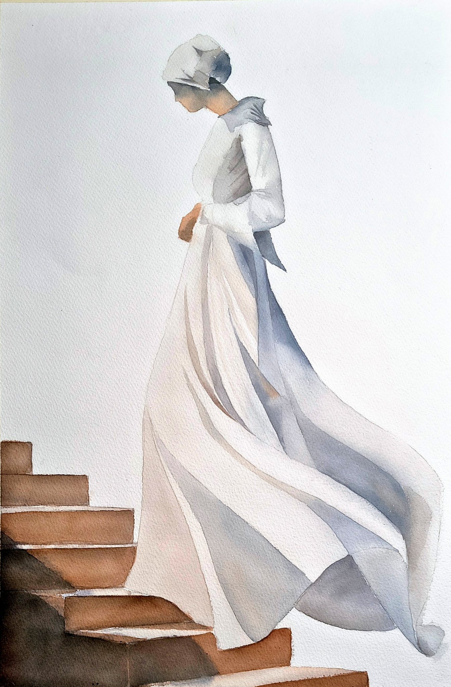

Et udvalg af Annisettes værker. Klik på et maleri for at se det større. Du kan også følge hendes seneste kunst på Instagram.
Se flere værker på InstagramBilledkunstner · Akvarel, pastel & gouache
The Imperfect
is Perfect.
Velkommen til Annisette Falk-Jensens univers af farver, fordybelse og kunst.
Se Annisettes kunst»Jeg elsker at fordybe mig i farvernes verden.«

01 / Kunst
Et blik ind i
hendes univers.
02 / Om Annisette
Farverne får
lov at leve.
Jeg elsker at arbejde med akvarel, gouache og tørpastel, fordi hvert medie har sit eget temperament og sine egne muligheder.
Akvarellens spontanitet, gouachens styrke og pastellens intense farver giver mig frihed til at udforske kontraster, stemninger og følelser.
For mig handler kunst ikke om at gengive virkeligheden perfekt, men om at skabe fortællinger, der vækker noget i beskueren.
Min kunstneriske erkendelse er, at det uperfekte er det perfekte – og at kunsten bliver levende i mødet mellem kontrol og det uforudsigelige.
Annisette Falk-Jensen
03 / Kunstnerisk CV
Udstillinger
& udgivelser.
Gruppeudstillinger
2026
- BiZart Åben 2026, Holbæk, Danmark
- Human Nature, Mindmachine Art Gallery, Odense, Danmark
- IV International Watercolor Festival, Colors of Armenia
- Aurora Watercolour Festival, Iceland
- Watercolor Golden Brush
- Kunst i Pinsen, Danmark
- El IV Festival Internacional de Acuarela Córdoba 2026
- Artio Gallery: Global Horizons, a celebration of artistic expression
2025
- Nordic akvarel 2025, Nordiska akvarell sällskabet, Frederikshavn, Danmark
- Expo Metro, Barcelona
- Herregårdsmuseet Selsø Slot, Danmark
- Fabriano in acquarello 2025, Fabriano, Italien
2024
- Fabriano in acquarello 2024, The Fort Worth Community Arts Center, Texas
- Fabriano in acquarello 2024, Fabriano, Italien
- HC, Hvidovre, Danmark
- Lejre Kunst, Lejre, Danmark
Soloudstillinger
2024
- NCC Kunstforening, Søborg, Danmark
2019
- Kilden Kulturhus, Brøndbyøster, Danmark
2018
- Sorø Kunstgangen, Sorø, Danmark
2017
- Mosedamsgaard, Værløse, Danmark
2016
- Erhvervsagenten, Glostrup, Danmark
Publikation
2025
- 100 Emerging Artworks of 2025, Arts to Hearts Project
04 / Akvarelkurser
Mal med
Annisette.
Har du lyst til selv at arbejde med akvarel? På Annisettes underviserside hos FOF kan du læse om hendes kurser og finde de aktuelle hold.